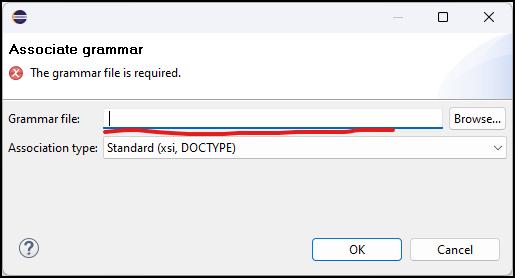
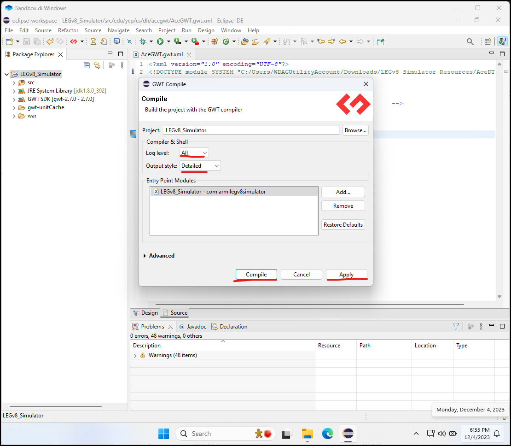

Download, install and run Eclipse [ https://www.eclipse.org/downloads/ ]
Select your preferred directory as workspace. This will be the directory containing the project so remember its name.
Create a resources folder to put all the important files in. I will call it “LEGv8 Simulator Resources”
Download a Java 8 JDK ( not JRE! ) of your choice. I recommend Amazon Corretto 8 for licensing and compatibility reasons [ https://aws.amazon.com/corretto ]
Extract the .zip file and move the extracted folder in the resources folder.
Tell Eclipse to use this JDK instead of the default one. Go to Window → Preferences
Java –> Installed JREs → Add..
Press Next
Click on Directory… and select the one containing your JDK, in this case the folder amazon-corretto-8.392.08.1-windows-x64-jdk/jdk1.8.0_392 inside the resources folder
The libraries list will now be populated and you can press Finish
Select your JDK and press Apply and Close
Navigate to Help → Eclipse Marketplace…
Search for “gwt” and press “Install” for the “GWT Plugin”
Accept the terms of the License Agreement and wait while Eclipse installs the plug-in ( you can see the progress on the bottom right progress bar ). Select all the authorities and press Trust Selected
After this, keep waiting and then you will be asked to do the same thing one more time.
When the installation finishes press Restart Now.
In Eclipse go to File –> Open Projects from File System…
Click on Directory… and select the folder containing the project you downloaded from GitHub
Unselect the first folder and press Finish
Eclipse will show you this dialog multiple times, ignore it every time or click the Project Natures preferences and disable the automatic warnings.
Download GWT SDK version 2.7 (this is what the project uses) and extract it in your resources folder [ https://www.gwtproject.org/versions.html ]
Right click on the project’s folder inside Eclipse and navigate to Build Path –> Configure Build Path
Go to the Libraries section and select Add Library
Select GWT and press Next
Click Configure SDK
Press Add…
Click Browse… and select the folder gwt-2.7.0/gwt-2.7.0 and press Ok
Press Apply and Close
Press Finish
Select the missing GWT SDK and press Remove
Go to the Projects section, select AceGWT and Remove it
Go to the Source section, select the test source and Remove it. Then Apply and Close
Eclipse by default doesn’t allow importing files from the internet. If you can enable it then you can skip this point but I still suggest you use the offline files, especially as the project becomes older.
Go to the file in the picture and substitute the URL of the Doctype with the absolute path of ProjectDTD.dtd and save the file
Save the file.
Download and extract the release of AceGWT version 1.0.0 and put it into your resources folder
[ https://github.com/daveho/AceGWT/releases ]
Right click on the src package of your project’s folder inside Eclipse and select Import…
Select General → File System and press Next
Press Browse… and select the folder src/ from AceGWT
Check the src/ folder and Finish
Navigate to AceGWT.gwt.xml and click on the “Bind to grammar/schema … “ text
Paste the path of the AceDTD.dtd file into the textbox (if you click “Browse…” it will only let you choose files from the project’s folder. If you put the AceDTD.dtd file in an external folder like we did you won’t be able to add it from there)

Do not worry if it says it doesn’t exist, once you press Ok it will automatically add it
Save the file.
Now to compile the project we just need to right click on the project –> GWT –> Compile
For ease of debugging we use Log Level: All, Output style: Detailed . Click Apply and then Compile

We also have to let the program use the network since it uses a web interface
The LEGv8 Simulator is a self-contained ( portable ) application. In order to test/run the simulator you just need to go to the war/ folder and open the LEGv8_Simulator.html file. If you want to distribute it to other people or put it somewhere else on your computer you just need to copy the war/ folder wherever you want ( and maybe rename it with a name of your choosing ) .
POSSIBLE IMPROVEMENTS:
- Add a script to the repository that automatically downloads all the resources from the internet, moves them to the correct places and edits the files without needing to use Eclipse’s custom features to do it.
- Make the project less Eclipse-dependent. Ideally the project should be compilable, modifiable and runnable without Eclipse and by using the official libraries and command-line utilities ( such as Google’s GWT ) , preferably all automatically through a script without the user needing to follow this tutorial.